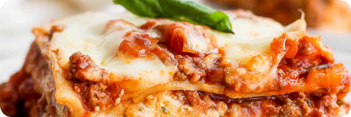

Homemade Lasagna

A classic recipe that every cook should have in their rotation.
While there are a few steps to this lasagna recipe, it's easy to make and has so much flavor. This dish can be made ahead of time and freezes well either before or after baking!
Homemade lasagna may have a few steps, but each step is easy – and I assure you it's worth the time; the perfect Italian meal!
Ingredients
- 12 lasagna noodles
- 4 cups of mozzarella cheese
- 1/2 cup parmesan cheese
- 1/2 pound lean ground beef
- 1/2 pound Italian sausage
- 1 onion diced
- 2 cloves garlic minced
- 36 ounces pasta sauce
- 2 tsp tomato paste
- 1 tsp Italian seasoning
- 12 cups of ricotta cheese
- 1/4 cup frsh parsley
- 1 egg
Steps
- Preheat the oven to 350°F
- Boil noodles until al dente
- In a large skillet or dutch oven, brown beef, sausage, onion, and garlic over medium-high heat until no pink remains. Drain any fat.
- Stir in the pasta sauce, tomato paste, Italian seasoning, ½ teaspoon of salt, and ¼ teaspoon of black pepper. Simmer uncovered over medium heat for 5 minutes or until thickened.
- In a separate bowl, combine 1 ½ cups mozzarella, ¼ cup parmesan cheese, ricotta, parsley, egg, and ¼ teaspoon salt.
- Spread 1 cup of the meat sauce in a 9x13 pan or casserole dish. Top it with 3 lasagna noodles. Layer with ⅓ of the ricotta cheese mixture and 1 cup of meat sauce. Repeat twice more. Finish with 3 noodles topped with remaining sauce.
- Cover with foil and bake for 45 minutes.
- Sprinkle mozzarella and paremesan cheese.
- Bake for an additional 15 minutes.
- Rest for at least 15 minutes before cutting.